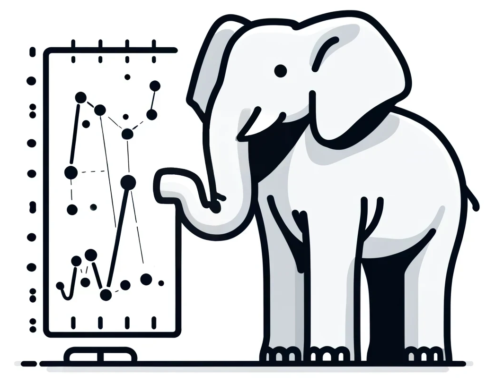
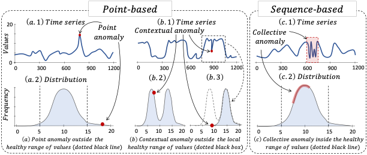
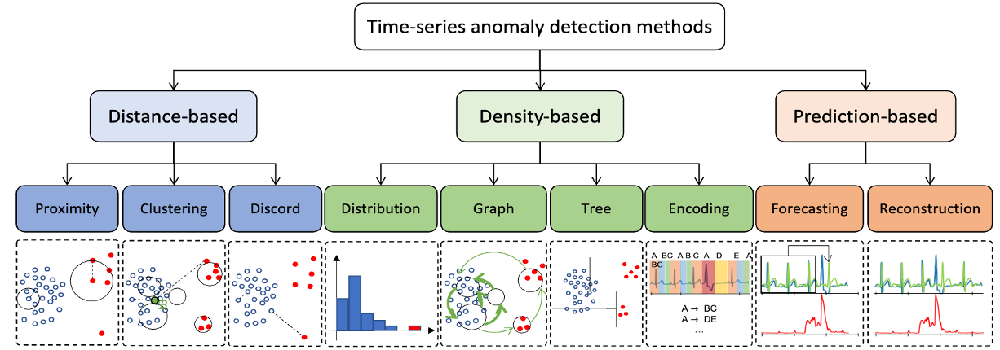
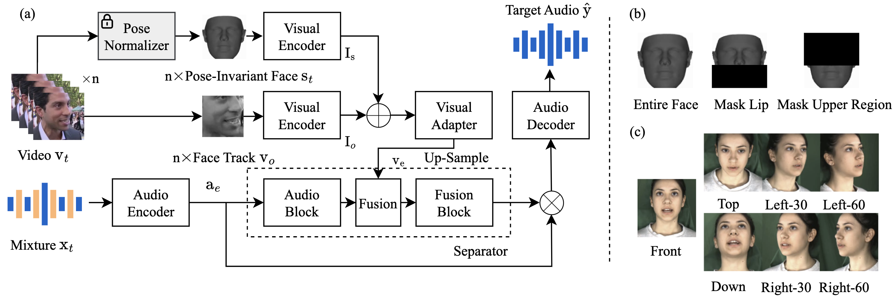

Qinghua Liu
PhD Student at OSU CSE

• Location: Columbus, USA
• Email: liu.11085@osu.edu
• Google Scholar: Link
• Linkedin: Link
• Twitter: @qhliu26
• Blog: Zhihu
About Me
I'm a second-year PhD student advised by Prof. John Paparrizos at The Ohio State University.I'm currently working on Time-Series Anomaly Detection. Specifically, my research interests are centered around three main pillars:
- Automation - building end-to-end automated anomaly detection system;
- Reliability - towards rigorous benchmarking practice and the development of more explainable anomaly detection algorithms;
- Generalizability - developing more robust and accurate models leveraging the foundation model paradigm and emerging reasoning abilities of LLMs.
📝 Education

|
Aug 2023 - Present PhD Student in Computer Science and Engineering, The Ohio State University (OSU), USA |

|
Sept. 2018 - Jun. 2022 B.Eng. in Electronic Information Engineering Qiushi Honors College, Tianjin University (TJU), China |
📖 Publication
|  |
📄 The Elephant in the Room: Towards A Reliable Time-Series Anomaly Detection Benchmark Qinghua Liu, John Paparrizos [Paper] [Website] [Code] NeurIPS 2024 (DB Track) |
|  |
📄 Dive into Time-Series Anomaly Detection: A Decade Review Paul Boniol, Qinghua Liu, Mingyi Huang, Themis Palpanas, John Paparrizos [Paper] |
|  |
📄 Time-Series Anomaly Detection: Overview and New Trends Qinghua Liu, Paul Boniol, Themis Palpanas, John Paparrizos [Paper] [Code] VLDB Tutorial 2024 |
|  |
📄 PIAVE: A Pose-Invariant Audio-Visual Speaker Extraction Network Qinghua Liu, Meng Ge, Zhizheng Wu, Haizhou Li [Paper] [Code] INTERSPEECH 2023 |

|
📄 Dive into Big Model Training Qinghua Liu, Yuxiang Jiang [Paper] |

|
📄 LiMuSE: Lightweight Multi-modal Speaker Extraction Qinghua Liu, Yating Huang, Yunzhe Hao, Jiaming Xu, Bo Xu [Paper] [Code] [Dataset] IEEE SLT 2022 |
🕶️ Awesome List
💼 Experience

|
The Chinese University of Hong Kong, Shenzhen Jul. 2022 - Present Research Assistant (Advisor: Prof. Haizhou Li) Audio-visual SSL and speaker extraction |

|
JDT, JD.com Inc Mar. 2022 - Jul. 2022 Algorithm Engineer Intern (Supervisor: Cong Guo) Machine learning platform and training parallelism |

|
Institute of Automation, Chinese Academy of Sciences Jun. 2021 - Jan. 2022 Research Intern (Advisor: Prof. Jiaming Xu) Lightweight multi-modal auditory frontend model computation and optimization |
🏆 Academic Awards
- Meritorious Winner in Mathematical Contest in Modeling | 2021
- 1st prize in Contemporary Undergraduate Mathematical Contest in Modeling at Tianjin region | 2020
- 2nd prize in National Intelligent Vehicle Contest at North China Region | 2020
- 1st prize in Mathematics Competition of Chinese College Students at Tianjin region | 2019
🏄 Extra Curricular Activaties

|
Tianjin University Student Ambassador Association Dec. 2020 - Feb. 2022 President Attend international exchange events and organize foreign affairs reception |